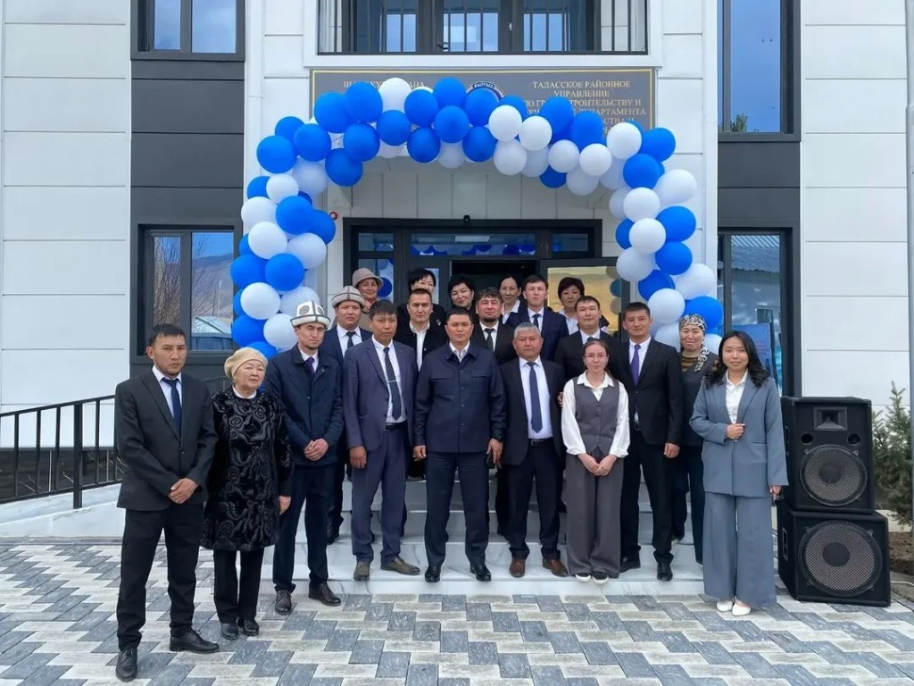
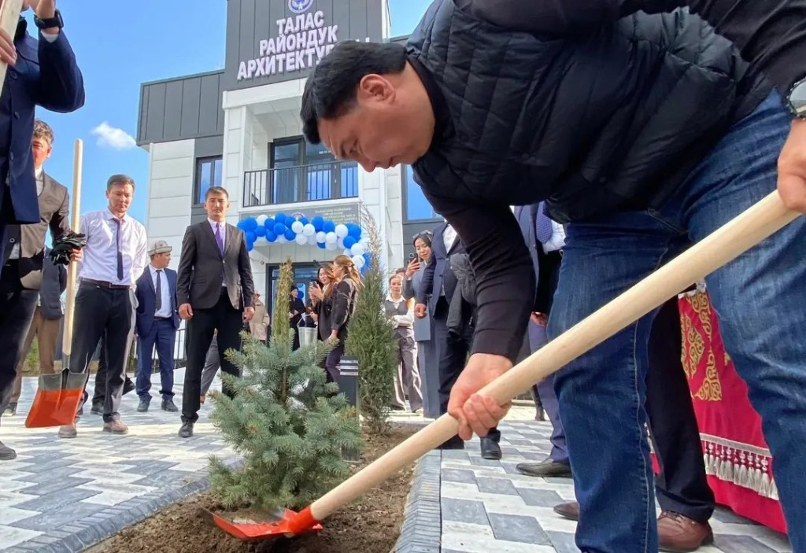
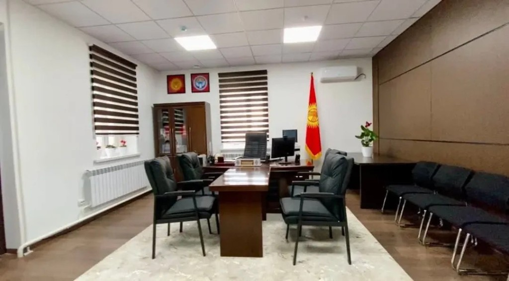
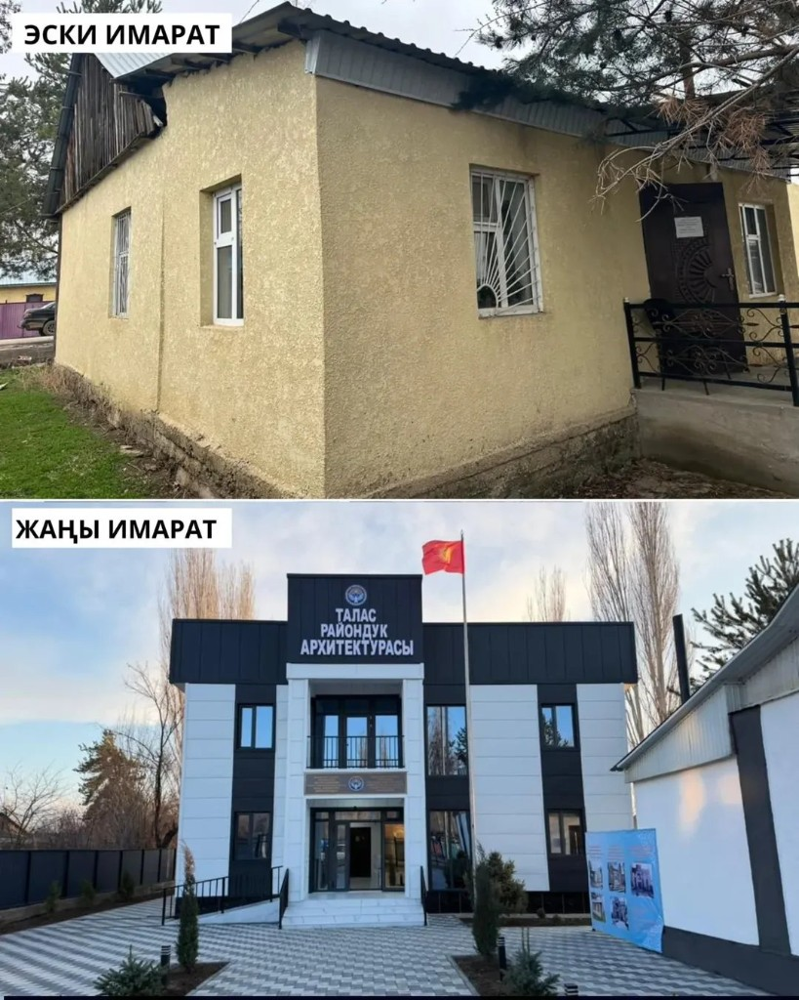
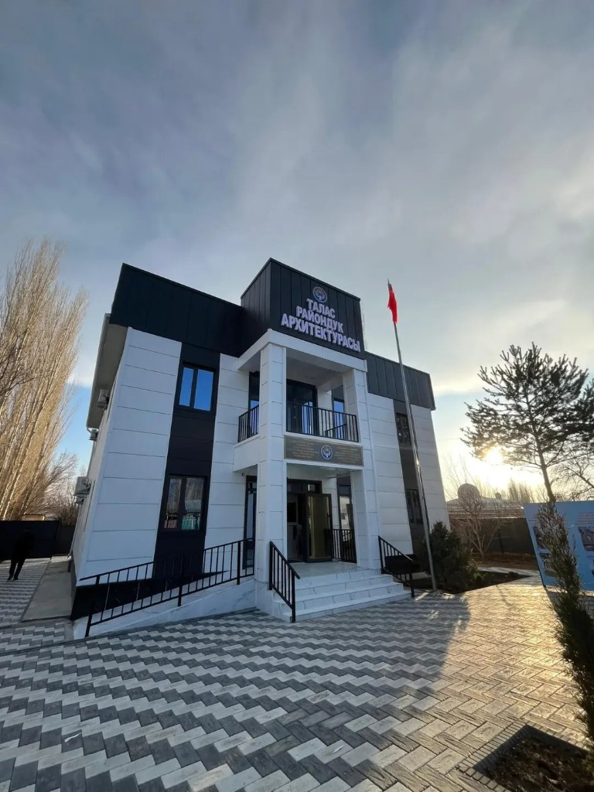

История создания Таласской архитектуры
История Таласского районного управления по градостроительству и архитектуре
Развитие архитектуры и градостроительства в Таласской области связано с формированием системы государственного строительства Кыргызской Республики. После образования Таласской области началось активное развитие инфраструктуры, жилищного строительства и административных объектов.

Для регулирования вопросов строительства, проектирования и архитектурного контроля были созданы региональные и районные управления по градостроительству и архитектуре, подчинённые государственному органу архитектуры и строительства Кыргызской Республики. Основной целью данных учреждений является обеспечение соблюдения градостроительных норм, развитие населённых пунктов и контроль архитектурной деятельности.

Таласское региональное управление по градостроительству и архитектуре осуществляет деятельность в сфере архитектуры, проектирования и градостроительного контроля на территории Таласской области. Управление входит в систему государственных органов архитектуры и строительства Кыргызской Республики.


В структуру управления входят районные подразделения, в том числе Таласское районное управление по градостроительству и архитектуре, которое занимается вопросами:
- выдачи архитектурно-планировочных заданий;
- согласования строительных проектов;
- контроля за строительством;
- подготовки градостроительной документации;
- консультирования граждан и организаций.
С развитием цифровизации государственных услуг управление постепенно внедряет электронные сервисы и современные методы обработки заявок, что повышает эффективность взаимодействия с населением и строительными организациями.

Сегодня управление играет важную роль в развитии Таласской области, обеспечивая архитектурное планирование, безопасность строительства и соблюдение градостроительных стандартов Кыргызской Республики.